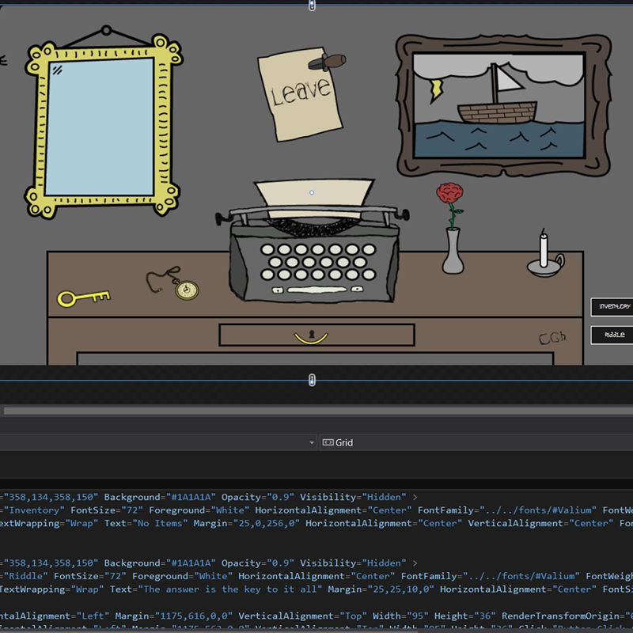
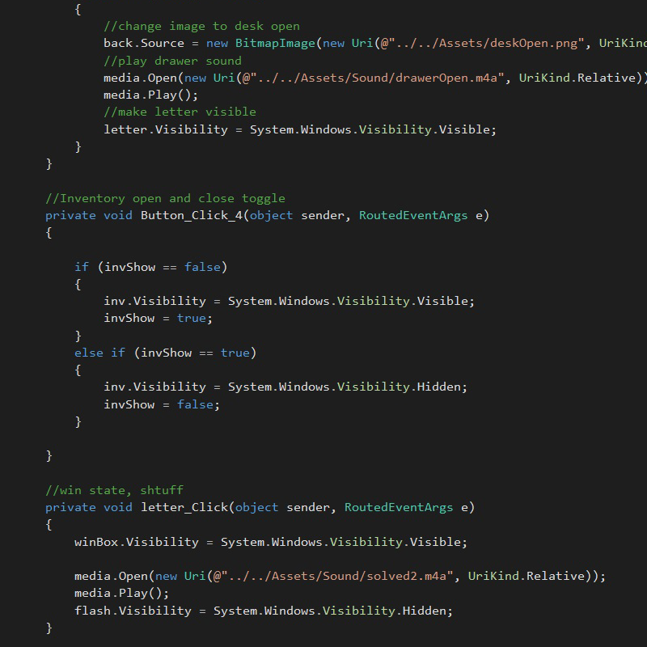

Shine
Description:
A game made with c# and the Kinect SDK within the WPF framework. Player solves riddles
and follows an overarching story to find their missing friend.
Technologies used:
Visual Studio, c#, Kinect SDK, Kinect Studio, Illustrator, Audactity

The Vision
A spooky story driven experience, you are looking for your friend, he contacted you after
years of silence asking for your help, you set out for the great north in search of him,
before it's too late.
100% custom sound and visuals, a variety of game interactions, inventory system, flashlight mechanic, and more!

The Method
We conceived an overall story, and parceled it out into several levels. Riddles and game mechanics were made to fit the story.
Contextual events connect the levels and pieces of levels, like a rube goldberg machine.